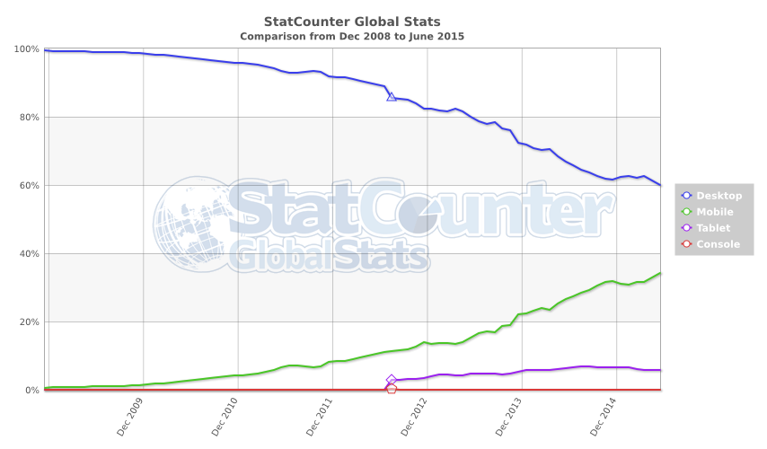
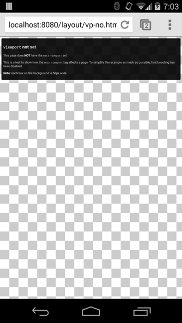
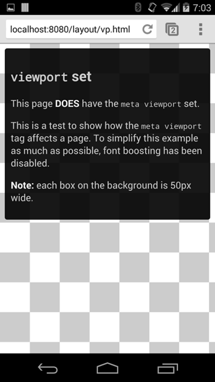
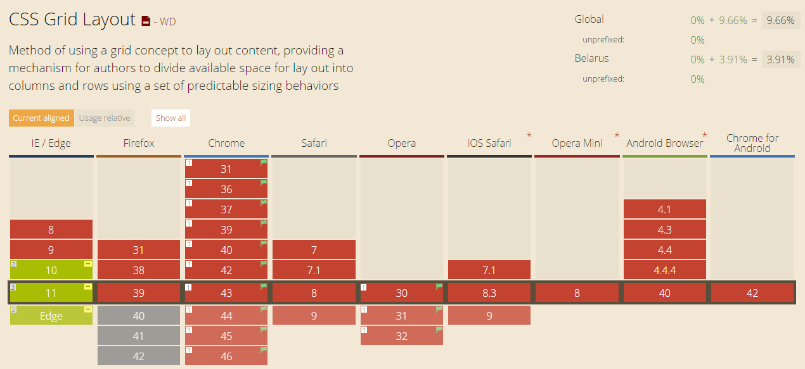
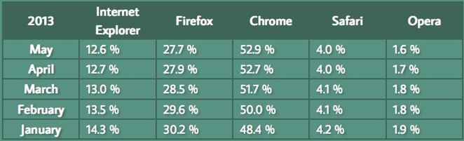
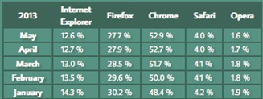
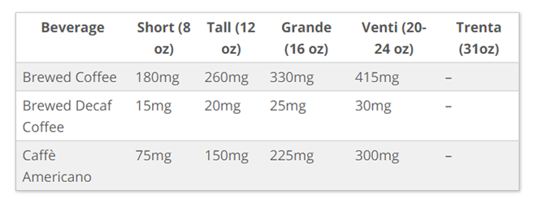
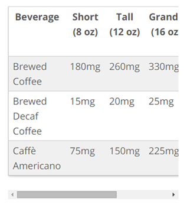
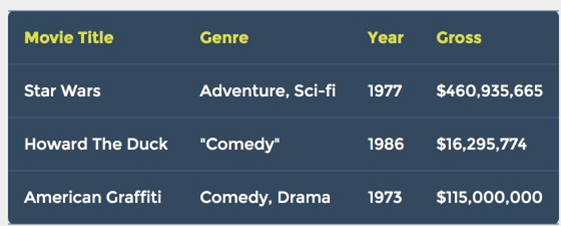
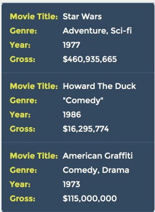

Responsive Web Design
Created by Vladimir Zhydal
What?
Responsive Web Design (RWD) is an approach to web design aimed at crafting sites to provide an optimal viewing experience across a wide range of devices.
One site for every screen

Why?
Day by day, the number of devices, platforms, and browsers that need to work with your site grows. Responsive web design represents a fundamental shift in how we’ll build websites for the decade to come.
Jeffrey Veen
WEB Statistics
History
- 2004
- A site layout example that adapts to browser viewport width was first demonstrated by Cameron Adams.
- 2009
- CSS3 media queries were almost ready for prime time.
- 2010
- Ethan Marcotte coined the term responsive web design.
- 2012
- Responsive design was listed as #2 in Top Web Design Trends.
How can we do responsive?
- viewport
- media queries
- flexible images and media
- adaptive images
- grids
- flexbox
- responsive tables
Viewport
Viewport Basics
//TODO: http://www.quirksmode.org/mobile/viewports.html //TODO: http://www.quirksmode.org/mobile/viewports2.htmlViewport meta tag
A meta viewport tag gives instructions on how to control the page's dimensions and scaling.
Viewport meta tag History
It was first implemented by Apple for the Safari/iPhone browser, but has since been implemented for most of mobile browsers.
Viewport meta tag syntax
Viewport meta tag basics
default
width=device-width
Viewport meta tag properties
| Property | Description |
|---|---|
| width | Width of the viewport in pixels (or device-width). If width isn’t set, it defaults to a desktop size (980px on mobile Safari). |
| height | Height of the viewport in pixels (or device-height). Generally you don’t need to worry about setting this property. |
| initial-scale | (0 to 10.0) Multiplier that sets the scale of the page after its initial display. Safe bet: if you need to set it, set it to 1.0. Larger values = zoomed in, smaller values = zoomed out |
Viewport meta tag properties
| Property | Description |
|---|---|
| minimum-scale | (0 to 10.0) The minimum multiplier the user can “zoom out” to. Defaults to 0.25 on mobile Safari. |
| maximum-scale | (0 to 10.0) The minimum multiplier the user can “zoom in” to. Defaults to 1.6 on mobile Safari. |
| user-scalable | (yes/no) Whether to allow a user from scaling in/out (zooming in/out). Default to “yes” on mobile Safari. |
CSS @viewport
The @viewport rule consists of the @-keyword followed by a block of property declarations describing the viewport.
@viewport {
width: 980px;
min-zoom: 0.25;
max-zoom: 5;
}
CSS @viewport Properties
| Property | Description |
|---|---|
| width | Sets both max and min-width. It's a shorthand descriptor. auto | device-width | length | percentage |
| max-width | auto | device-width | length | percentage |
| min-width | auto | device-width | length | percentage |
| orientation | Lock orientation or leave to auto. auto; // auto | portrait | landscape |
CSS @viewport Properties
| Property | Description |
|---|---|
| zoom | 'zoom' equates to 'initial-scale' in meta tag. auto | number | percentage |
| max-zoom | Largest allowed zoom factor. |
| min-zoom | Smallest allowed zoom factor. |
| user-zoom | Equates to 'user-scalable' in meta tag. fixed | zoom |
Summary
- Use a meta viewport tag to control the width and scaling of the browsers viewport.
- Include width=device-width to match the screen's width in device independent pixels.
- Include initial-scale=1 to establish a 1:1 relationship between CSS pixels and device independent pixels.
- Ensure your page is accessible by not disabling user scaling.
Media Queries
Media Queries
Media queries let the presentation of content be tailored to a specific range of output devices without having to change the content itself.
Syntax
A media query consists of a media type and zero or more expressions that check for the conditions of particular media features
@import url("ex.css") screen;
@media (min-width:500px) { … }
Logical Operators
- and
-
@media (min-width:500px) and (orientation:landscape){ … } - or
-
@media (min-width:500px), (max-height:500px){ … } - not
-
@media not screen and (color){ … } - only
-
@media only screen and (color){ … }
Media Types
| Type | Description |
|---|---|
| all | Suitable for all devices. |
| braille | Intended for braille tactile feedback devices. |
| embossed | Intended for paged braille printers. |
| handheld | Intended for handheld devices (typically small screen, limited bandwidth). |
| Intended for paged material and for documents viewed on screen in print preview mode. |
Media Types
| Type | Description |
|---|---|
| projection | Intended for projected presentations, for example projectors. |
| screen | Intended primarily for color computer screens. |
| speech | Intended for speech synthesizers. |
| tty | Intended for media using a fixed-pitch character grid (such as teletypes, terminals, or portable devices with limited display capabilities). |
| tv | Intended for television-type devices (low resolution, color, limited-scrollability screens, sound available). |
Media features
| Property | Description |
|---|---|
| aspect-ratio | is defined as the ratio of the value of the ‘width’ media feature to the value of the ‘height’ media feature. |
| color | describes the number of bits per color component of the output device. |
| color-index | describes the number of entries in the color lookup table of the output device. |
| device-aspect-ratio | is defined as the ratio of the value of the ‘device-width’ media feature to the value of the ‘device-height’ media feature. |
Media features
| Property | Description |
|---|---|
| device-height | describes the height of the rendering surface of the output device. |
| device-width | describes the width of the rendering surface of the output device. |
| grid | is used to query whether the output device is grid or bitmap. |
| height | describes the height of the targeted display area of the output device. |
Media features
| Property | Description |
|---|---|
| monochrome | describes the number of bits per pixel in a monochrome frame buffer. |
| orientation | is ‘portrait’ when the value of the ‘height’ media feature is greater than or equal to the value of the ‘width’ media feature. |
| resolution | describes the resolution of the output device, i.e. the density of the pixels. |
| scan | describes the scanning process of "tv" output devices. |
| width | describes the width of the targeted display area of the output device. |
JS API
var widthQuery = window.matchMedia("(min-width: 600px)");
if (widthQuery.matches) {
/* the viewport is at least 600 pixels wide */
} else {
/* the viewport is less than 600 pixels wide */
}
JS API: MediaQueryList
- matches
- Boolean whether the query matched or not.
- media
- Serialized media query list.
- addListener
- Adding event listener to a media query. Listener is invoked when the media query's evaluated result changes.
- removeListener
- Removing event listener from a media query.
Summary
- Media queries can be used to apply styles based on device characteristics.
- Use min-width over min-device-width to ensure the broadest experience.
Flexible images and media
Flexible Images
img {
max-width: 100%;
}
Flexible Video
video {
max-width: 100%;
}
Flexible Audio
audio {
width: 100%;
}
Flexible SVG
Modern browsers make svg flexible from the box. For old browsers a padding 'workaround' can be used.
.svg-container {
display: inline-block;
position: relative;
width: 100%;
padding-bottom: 100%;
vertical-align: middle;
overflow: hidden;
}
.svg-content {
display: inline-block;
position: absolute;
top: 0;
left: 0;
}
Flexible Canvas
If you resize the canvas, the drawn content is always erased. You can either redraw the content after resizing.
var previousWidth = window.innerWidth;
var resizeCanvas = function(context){
canvas.width = window.innerWidth;
canvas.height = window.innerHeight;
scale = window.innerWidth/previousWidth;
context.scale(scale, scale);
drawRectangle(context);
};
window.addEventListener('resize',
resizeCanvas.bind(null, context),
false);
Adaptive Images
srcset
- A list of one or more strings separated by commas indicating a set of possible image sources for the user agent to use.
- Getting images to scale efficiently across varying viewport widths and screen resolutions.
srcset
width descriptor
<img
srcset="
imgs/large.jpg 1920w,
imgs/medium.jpg 960w,
imgs/small.jpg 480w"
src="imgs/medium.jpg"
alt="Details."/>
pixel density descriptor
<img
srcset="
imgs/large.jpg 1x,
imgs/medium.jpg 2x,
imgs/small.jpg 3x"
src="imgs/medium.jpg"
alt="Details."/>
sizes
- A list of one or more strings separated by commas indicating a set of source sizes.
- Source size values specify the intended display size of the image.
sizes
<img
srcset="
imgs/large.jpg 1920w,
imgs/medium.jpg 960w,
imgs/small.jpg 480w"
sizes="(min-width: 33em) 33em, 100vw"
src="imgs/medium.jpg"
alt="Details."/>
That says: is the viewport wider than 33em? This image will be 33em wide. Otherwise, it’ll be 100vw.
Picture and art direction
srcset if you’re lazy, picture if you’re crazy.
Mat Marquis
art direction
- Tailoring image content to fit specific environments.
- Sometimes this means cropping an image.
- Other times, it can mean a different image altogether that may have different proportions or may be changed in other ways to communicate more effectively in a layout.
Picture
<picture>
<source media="(orientation: landscape)" srcset="landscape.jpg" />
<img src="portrait.jpg" alt="A rad wolf." />
</picture>
Picture
<picture>
<source
media="(min-width: 36em)"
srcset="imgs/large.jpg 1920w,
imgs/medium.jpg 960w,
imgs/small.jpg 480w" />
<source
srcset="imgs/large-square.jpg 822w,
imgs/medium-square.jpg 640w,
imgs/small-square.jpg 320w" />
<img
src="imgs/medium.jpg"
alt="Details." />
</picture>
source type
<picture>
<source type="image/svg+xml" srcset="logo.svg" />
<source type="image/webp" srcset="logo.webp" />
<img src="logo.png" alt="RadWolf, Inc." />
</picture>
If the browser supports a source’s type, it will send that source’s srcset to the img.
Grids
CSS Grids
Grids Libraries
- Skeleton
- Neat
- Simple Grid
- csswizardry-grids
- Profound Grid
- Griddle
- Extra Strength Responsive Grids
- Proportional Grids
- Dead Simple Grid
- Responsive Grid System
- ...
- Most of CSS frameworks contain their own grid systems
Grids Libraries Basics
Responsive Grids
Flexbox
Flexbox Basics
//TODO:Responsive Tables
Scale
Desktop
Mobile
Scroll to the right
Desktop
Mobile
content: attr(data-content)
Desktop
Mobile
Advices
Use relative units
A key concept behind responsive design is fluidity and proportionality as opposed to fixed width layouts.
Don’t use relative units
Don’t use relative units everywhere. Ask yourself a question:
Is this property depending on the viewport width?
Choose correct breakpoints
- Defining breakpoints based on specific devices, products, brand names, or operating systems that are in use today can result in a maintenance nightmare.
- The content itself should determine how the layout adjusts to its container.
‘Mobile’ first
Use the simplest layout as a start point.
- Forces You to Focus on Core Content and Functionality.
- In most cases this approach will get less css styles overrides.
Don’t use min-device-width
creating queries based on *-device-width; is strongly discouraged.
Don’t use absolute values for defining viewport
Use CSS preprocessors
Use CSS preprocessors to define bundles
@phone = ~’320px’PREVIEWING & TESTING
External resources
- Responsinator.com
- displays as numerous devices
- iOS Simulator
- if you have a Mac. (After launching Xcode, go into the Xcode menu and chooseOpen Developer Tool > iOS Simulator)
- Browserstack
- for cross browser and device testing.
BROWSER DEVTOOLS
Chrome: DevTools Device Mode Firefox: Responsive Design View Article on DevTools Emulation in Chrome, Firefox, and IETEST ON REAL DEVICES
- Nothing beats holding a device and touching a site.
- How far do you need to reach to tap something?
- How well does the device respond?
Resources
- https://developer.mozilla.org/en-US/docs/Web_Development/Mobile/Responsive_design
- http://alistapart.com/article/responsive-images-in-practice
- https://html.spec.whatwg.org/multipage/embedded-content.html#attr-picture-source-media
- http://www.quirksmode.org/mobile/viewports.html
- https://developers.google.com/web/fundamentals/layouts/index?hl=en
- https://developer.mozilla.org/en-US/docs/Mozilla/Mobile/Viewport_meta_tag